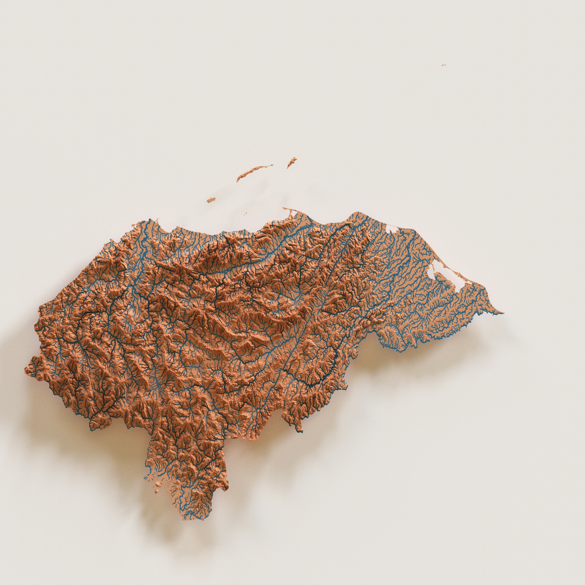

Honduras in 3D
Exploring the capabilities of the Rayshader package in R

This map is a 3D rending of the Honduras's elevation and river system. It shows a vectorized line network of all rivers in Honduras that have a catchment area of at least 10 km² or an average river flow of at least 0.1 m³/sec, or both.
The following R packages are used: Terra to deal with raster files, Elevatr to use the Digital Elevation Model, sf to capture vector format of rivers, Geodata to cut rivers according to boundaries of Honduras, and Rayshader to turn 2D into 3D plots
Workflow Steps
- Used geodata package to fetch the national boundaries (polygon) of Honduras
- Downloaded shapefile format of North and Central America river data from HydroSheds
- Loaded HydroSheds data into R and created a bounding box of Honduras using the SF package and its function st_bbox to see the minimum and maximum longitude and latitude
- Built a query to create a polygon out of the longitude and latitude values
- Clipped the country polygon so that only the rivers inside the borders of Honduras are included
- Determined the various river widths
- Used eps.io to reproject rivers into the coordinate reference system for Honduras
- Fetched the digital elevation model (DEM) and defined the clipping method to use only what is within the borders of Honduras
- Transformed the digital elevation model from a raster file to a matrix
- Rendered the scene with Rayshader
- Rendered and saved object as an image
- © Untitled
- Design: HTML5 UP